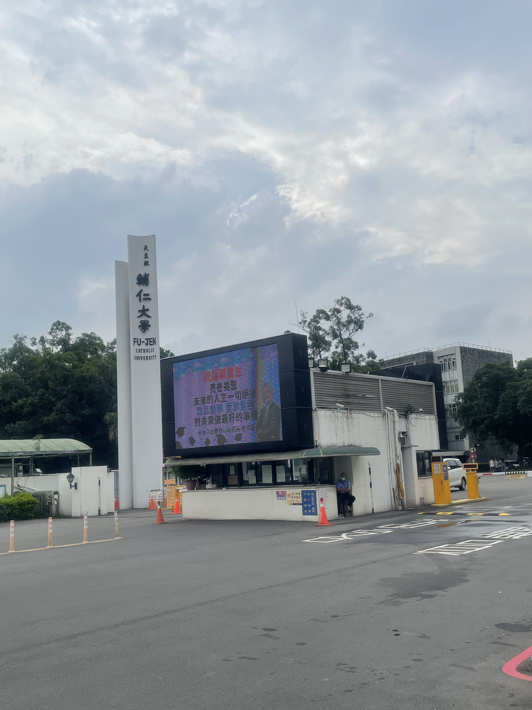
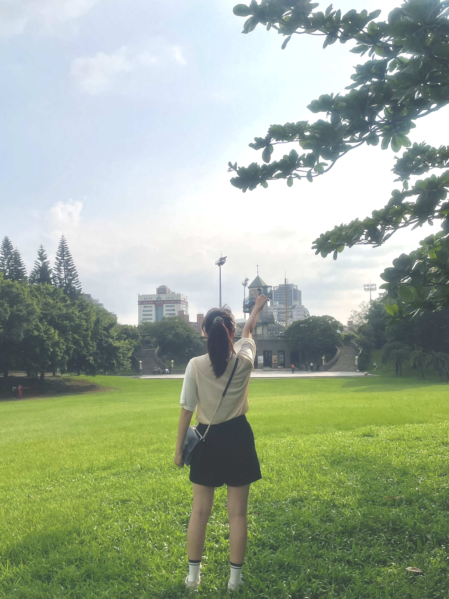
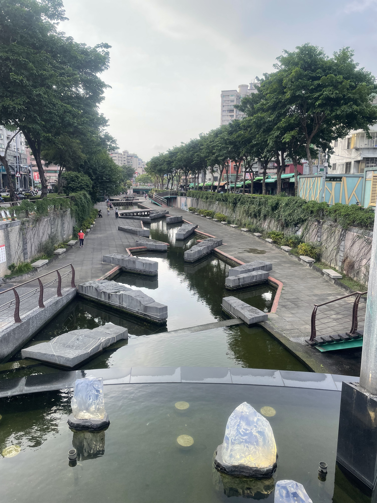
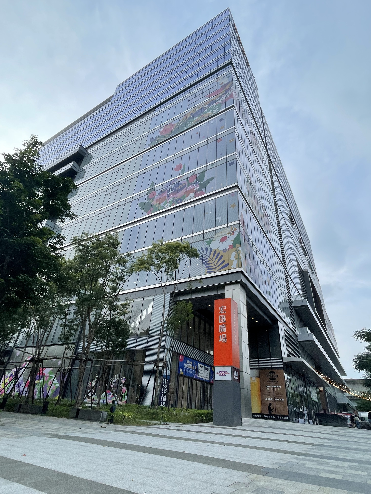
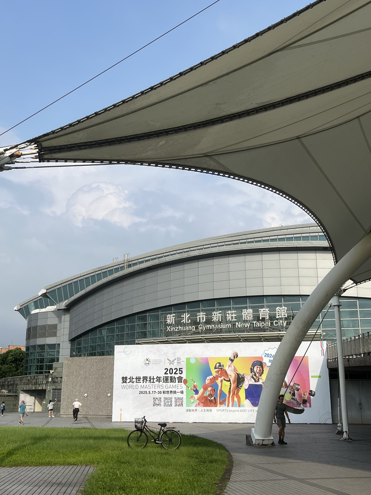
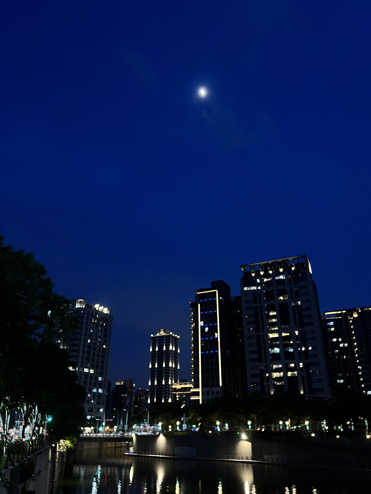

新北市新莊區
基本資訊
位於新北市西北側，是新北市歷史最悠久、人口眾多的行政區之一，同時也是北臺灣重要的交通與生活核心。地理位置緊鄰臺北市，透過橋梁與捷運系統與市中心緊密連結，使新莊成為典型的都會型生活區。 新莊的發展可追溯至清代，是北臺灣早期開發的重要聚落之一，區內仍保有如新莊廟街、廣福宮與慈祐宮等歷史場域，展現深厚的地方信仰與傳統生活文化。這些老街與廟宇，不僅承載地方記憶，也成為認識新莊歷史的重要窗口。 在現代都市發展方面，新莊區兼具住宅、商業與產業功能。隨著捷運中和新蘆線與環狀線通車，新莊副都心逐步發展成新型行政與商業區，聚集大型商辦、公共建設與展演場館，使城市機能持續升級。
主要景點
- 新莊體育園區與河濱公園系統，成為居民休閒運動與大型活動的重要場所
- 以新莊廟街為核心，可見清代發展至今的街區紋理，周邊聚集了廣福宮、慈祐宮、武聖廟等重要廟宇
推薦景點
| 宏匯廣場
是結合購物、餐飲、娛樂與休閒功能的大型複合式商場，也是該區近年最具代表性的現代地標之一。廣場整體空間寬敞明亮，引進多元品牌、主題餐廳與影城設施，滿足購物、聚餐與休閒娛樂等不同需求，成為周邊居民與上班族的重要生活場域。 宏匯廣場不僅是商業設施，也與副都心的都市規劃相互呼應，周邊連結捷運、公園與辦公大樓，使人流與城市機能得以整合。透過大型公共空間與活動規劃，宏匯廣場展現新莊從傳統工業與住宅區，逐步轉型為現代都會生活圈的發展樣貌。
| 中港大排親水步道
是新莊重要的都市水岸景觀與環境再生代表。過去中港大排曾因都市快速發展而成為排水溝渠，水質與環境品質不佳，在整治工程完成後，轉型為兼具防洪、景觀與休憩功能的親水空間。 整治後的中港大排沿線規劃完善的步道、綠化植栽與休憩設施，讓原本封閉的排水設施成為市民可親近的公共空間。水岸景觀結合夜間燈光設計，在傍晚與夜晚呈現出不同氛圍，吸引居民散步、慢跑，也成為攝影與休閒活動的熱門地點。





